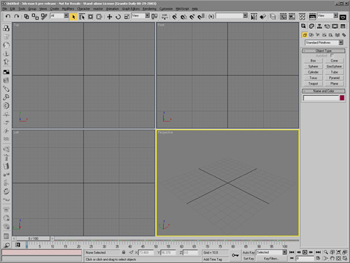

ame-light UI
Overview
The
ame-light
interface contains:
The same tools as the
DefaultUI,
with 2d icons and light colors.
All the standard UI schemes provided with 3ds max define the same pull down menus, keyboard shortcuts and right-click menus.
